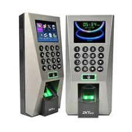
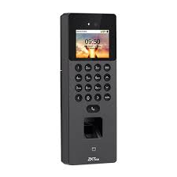
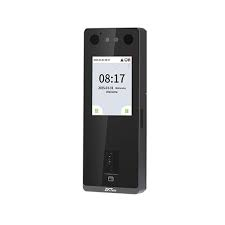
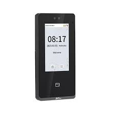
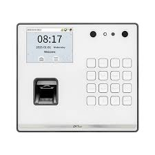
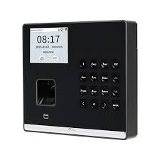
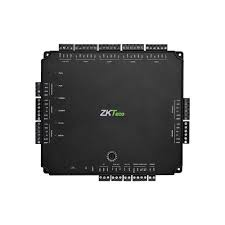

Biometric systems use unique physical traits such as fingerprints, facial recognition, or iris scans to provide secure and reliable access control and identity verification.

It is a well known advance fingerprint access control device from ZKTeco. It is widely used due to its large user capacity that stores up to 3,000 fingerprint templates, 5,000 cards, and 30,000 transaction logs. It also supports full access control functions like electric lock, door sensor, alarm, exit button, anti-passback, and doorbell integration.

It is an face recognition access control which uses facial recognition cameras. SenseFace 2A adopts the latest intelligent engineering facial authentication. It supports fingerprint, facial, card authentication with large capacity and speedy authentication, adopts ultimate antispoofing algorithm for facial authentication against almost all types of fake photos and videos attack, which offering secure biometric authentication.

It is similar product as senseface 4 and is advanced multi-biometric access control device that supports face recognition, fingerprint, RFID card, and password verification for flexible security management. It uses AI-based anti-spoofing technology to prevent fake access attempts and delivers ultra-fast recognition for smooth user entry. The device also features built-in video intercom support (SIP and ONVIF), making it suitable for smart building integration. With a large storage capacity for users and transaction logs, strong connectivity options like TCP/IP, Wiegand, and optional Wi-Fi, and a durable IP65-rated design, the SenseFace 3A is ideal for modern indoor and semi-outdoor security environments.

SenseFace 4 Series adopts the latest intelligent engineering facial authentication and in-glass fingerprint technology. It supports fingerprint, facial, card authentication with large capacity and speedy authentication, adopts ultimate antispoofing algorithm for facial authentication against almost all types of fake photos and videos attack, which offering secure biometric authentication. SenseFace 4 Series is an access control terminal featuring a video intercom function and supports ONVIF protocol.

The ZKTeco SenseFP M2 is a compact time attendance and access control device that supports fingerprint, RFID card, and password authentication for secure and flexible user verification. It offers fast fingerprint recognition and stores up to 3,000 users with 150,000 transaction logs, making it suitable for small to medium organizations. The device supports TCP/IP and Wi-Fi connectivity for easy data transfer and network integration, and it also includes basic access control functions such as door lock support and exit button connection, ensuring simple yet reliable attendance and security management.

The ZKTeco SenseFace M2F-LR is an advanced visible light biometric time attendance terminal that supports face recognition, fingerprint, RFID card, and password authentication for secure and flexible access control. It features AI-based anti-spoofing face recognition with fast verification and touchless operation within a 50-180 cm distance. The device uses a binocular camera with supplementary lighting for accurate identification even in low-light conditions. It also supports TCP/IP and Wi-Fi connectivity for easy network integration, includes a built-in access control interface for door locks and alarms, and offers optional backup battery support for up to 4 hours of power backup, making it ideal for modern office and enterprise security systems.

The ZKTeco C5S140 is an advanced IP-based access control panel designed to manage up to 4 doors with support for multiple authentication methods including RFID cards and passwords. It features high storage capacity for up to 100,000 users and 200,000 transaction logs, ensuring efficient data management for large organizations. The device supports multiple communication options such as TCP/IP, RS485, Wi-Fi, and PoE, making it easy to integrate into different network environments. It also includes built-in security functions like anti-passback, door interlocking, and real-time monitoring, along with support for multiple readers and relay outputs for locks, alarms, and other devices, making it ideal for commercial and industrial security systems.